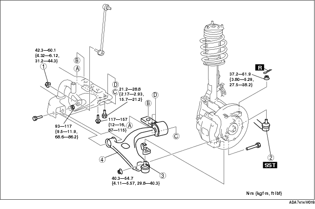

Front lower arm removal/installation
1. Remove in the order indicated in the table.
2. Install in the reverse order of removal.
3. Inspect the wheel alignment, and adjust it if necessary. (See FRONT WHEEL ALIGNMENT.)

|
1
|
Nut (stabilizer control link lower side)
|
|
2
|
Tie-rod end
|
|
3
|
Lower arm ball joint
|
|
4
|
Lower arm
(See Lower Arm Removal Note)
|
Lower Arm Removal Note
- • When working on the left side of ATX vehicles, move the engine and transaxle slightly towards the front of the vehicle so that the transaxle does not interfere with the removal of the lower arm front side bolt.
1. Loosen the transaxle side No.1 engine mount installation bolt. (ATX)
2. Remove the crossmember side No.1 engine mount installation bolt. (ATX)
3. Move the engine and transaxle slightly towards the front side of the vehicle. (ATX)
4. Remove the bolt (lower arm front side).
5. Remove the bolt (lower arm rear side).
6. Put the steering knuckle component outside of the vehicle.

7. Remove the lower arm.
Lower Arm Installation Note
- • Install the lower arm according to the following procedures for optimal installation. Tighten the lower arm installation bolt properly when the vehicle is lifted.
1. Put the steering knuckle component outside of the vehicle.

2. Temporarily install the lower arm.
3. Install the No.1 engine mount. (ATX)
Tightening torque- Crossmember side: 44.0-61.0 N·m {4.49-6.22 kgf·m, 32.5-44.9 ft·lbf}
- Transaxle side: 54.0-61.0 N·m {5.51-6.22 kgf·m, 39.9-44.9 ft·lbf}
4. Tighten the bolt (lower arm rear side).
5. Tighten the bolt (lower arm front side).